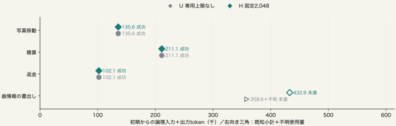

U：専用上限なし（−1）／H：固定2,048。全出力上限は両側とも最大4,096。
| 課題 | U 初期入力token | H 初期入力token |
|---|---|---|
| 写真移動 | 3,115 | 3,115 |
| 精算 | 3,104 | 3,104 |
| 返金 | 3,077 | 3,077 |
| 曲情報の書出し | 3,123 | 3,123 |
新しい初期状態から各１回。初期要求差は専用予算の値だけ。
| 課題 | 条件 | 成否 | 全仕事token | 生成 | API | 作業秒 |
|---|---|---|---|---|---|---|
| 写真移動 | U | 成功 | 135,628 | 16 | 99 | 491.1 |
| 写真移動 | H | 成功 | 135,628 | 16 | 99 | 490.3 |
| 精算 | H | 成功 | 211,110 | 24 | 25 | 349.5 |
| 精算 | U | 成功 | 211,110 | 24 | 25 | 349.5 |
| 返金 | U | 成功 | 102,087 | 13 | 13 | 321.5 |
| 返金 | H | 成功 | 102,087 | 13 | 13 | 321.4 |
| 曲情報の書出し | H | 未達 | 432,872 | 23 | 72 | 1,713.6 |
| 曲情報の書出し | U | 未達 | 358,638＋不明1 | 21 | 53 | 1,799.2 |

| 条件 | 成功／評価 | 既知token合計 | 計測済み／予定 |
|---|---|---|---|
| U 専用上限なし | 3/4 | 807,463＋不明1 | 4/4 |
| H 固定2,048 | 3/4 | 881,697 | 4/4 |
全課題 H−U：未確定 token
成功喪失 0課題、成功獲得 0課題。
全８評価と使用量既知、監査一致、成功喪失０、両側成功１以上、全費用減が必要。
| 成果の組合せ | 課題数 | H−U 全論理token |
|---|---|---|
| 両側成功 | 3 | 未確定 |
| 両側未達 | 1 | 未確定 |
| 成否が異なる | 0 | 未確定 |
| 片側以上が未評価 | 0 | 未確定 |
全４対の成否・費用差はCSVにも保存。欠測時は全体の寄与を未確定とする。
| 計測対象 | U 専用上限なし | H 固定2,048 |
|---|---|---|
| 既知の全入力token | 773,785 | 849,976 |
| 既知入力のcache再利用 | 673,826 | 747,123 |
| 既知のcache除外入力 | 99,959 | 102,853 |
| 既知の出力token | 33,678 | 31,721 |
| 生成試行 | 74 | 76 |
| API要求 | 190 | 209 |
| 使用量不明の生成 | 1 | 0 |
| 計測対象 | 実測値 |
|---|---|
| 推論器稼働秒 | 5,902.45 |
| モデルロード秒（稼働時間に含む） | 10.07 |
| 全条件の初期化・作業・後片付け秒 | 5,860.09 |
| 独立評価秒（稼働時間に含む） | 13.17 |
| 推論器の最大実測RSS GiB | 220.22 |
| 最大システムswap GiB | 0.00 |